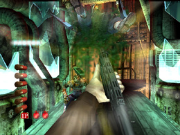
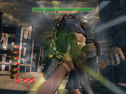

HODIII エクストリームモード
モード紹介
さて、いきなりの目玉！
というか、いきなりの隠しモードの説明からですが、今回のWii版を作るに
当たり作成した新モード。それが“エクストリームモード”です！
“エクストリームモード”には、「ガードアタック」という特殊操作が入り、
ちょっと変わった感覚で、ザ ハウス オブ ザ デッド III を遊んでもらうことが
できます。

これが「ガードアタック」だ！
操作は簡単！
Ａボタン、またはヌンチャクのＣボタンを押すと
プレイキャラクターが、勢いよくショットガンを振ります！
「ガードアタック」は、
・敵の攻撃を完全に防御する
・近距離の複数の敵に、かなりのダメージを与えることができる
という強力なアクション。
ただし「ガードアタック」の後は、必ず長めのリロードを行うので
その間、敵から攻撃されないように、使うタイミングには注意が必要です。
「ガードアタック」は
・体力が高い敵が接近したときに、「ガードアタック」でとどめを刺す。
・ボスが攻撃してきたタイミングで「ガードアタック」を行い、攻撃を完全に
防御する。
・複数の敵を「ガードアタック」で一気に倒す。
なんて使い方がオススメです。

タイミングが合えば、ボスの攻撃も防御可能！
また、このモードでは、ショットガンの性能が通常とは違っています！
通常のショットガンは、１発で広範囲にダメージを与えることができますが、
このエクストリームモードでは、
ダメージを与えられる範囲が、ハンドガン並みに小さくなっている
のです！（その代わりに、１発のダメージはぐんと大きくなってますよ。）
そう！昔からのＨＯＤファンの方はピンときたかもしれません。
このモードでは、正確に弱点を撃ちぬかなければ生き残れない！
HODIIIでありながらHOD2のようなプレイ感覚を楽しむことができるのです！
腕に自信のある方はぜひお試しを！！
そして最後にこっそり、ちょっと残念な（？）お知らせ。
このエクストリームモードは
・HOD2のアーケードモード
・HODIIIのアーケードモード
の両方をクリアして初めて、遊ぶことができます。
ちょっと上級者向けのモードですからね～。
でもご安心を！これから他のモードについてもレポートしていくので、
みなさん、２つのアーケードモードをクリアして、ぜひエクストリームモードに
チャレンジしてください！
ではまた～。
 RSS
RSS